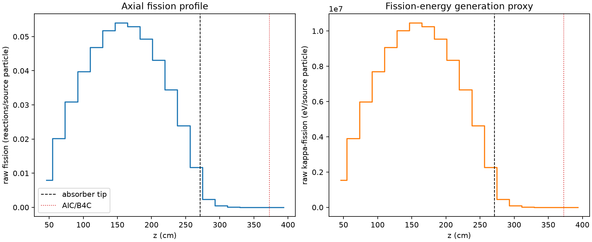
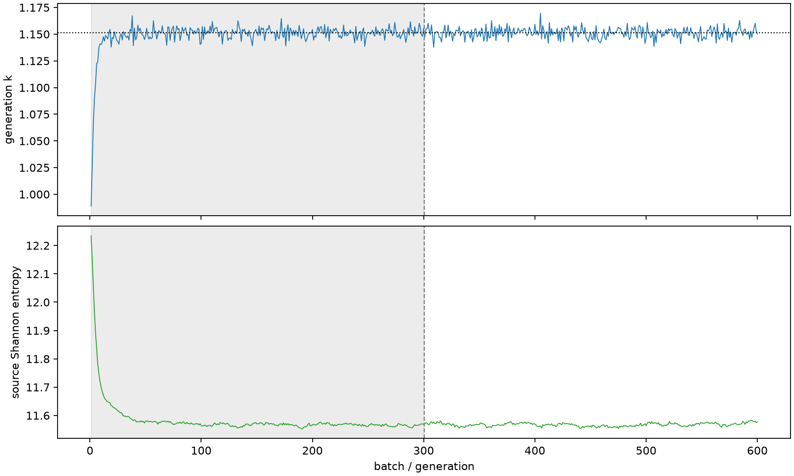

| field | value |
|---|---|
| experiment | V2-STAGE_256_OGRENCI_04-0030 |
| k | 1.1513308917062475 |
| MC standard error | 0.0001819982307156572 |
| seconds | 1021.5289951669984 |
| acceptance | not_assessed |
| convergence | review_required |
Completed is output integrity only; physical and statistical review required. Zero tallies do not prove zero production or zero uncertainty.
| diagnostic | value |
|---|---|
| geometric fuel voxels | 5280 |
| zero fission tally voxels | 115 |
| low signal fuel voxels | 1050 |
| low signal fission share | 7.573133022239095e-05 |
| low signal kappa share | 7.576324737256488e-05 |
| important fission share | 0.9500893821948551 |
| previous filter included | 4230 |
| duration estimate s | 1562.5173488400023 |
| actual minus estimate s | -540.988353673004 |
| fission relative MC error | statistics |
|---|---|
| all_geometric_fuel | {"voxels": 5280, "positive_mean_voxels": 5165, "zero_mean_voxels": 115, "undefined_relative_error_voxels": 115, "median": 0.010319630057480737, "p95": 0.7338559366052394, "maximum": 1.0000000000000002} |
| low_signal | {"voxels": 1050, "positive_mean_voxels": 935, "zero_mean_voxels": 115, "undefined_relative_error_voxels": 115, "median": 0.5301687236260241, "p95": 1.0, "maximum": 1.0000000000000002} |
| important_95pct | {"voxels": 2893, "positive_mean_voxels": 2893, "zero_mean_voxels": 0, "undefined_relative_error_voxels": 0, "median": 0.007624155679526828, "p95": 0.011033980603274797, "maximum": 0.014249107434326443} |
| outside_previous_filter | {"voxels": 1050, "positive_mean_voxels": 935, "zero_mean_voxels": 115, "undefined_relative_error_voxels": 115, "median": 0.5301687236260241, "p95": 1.0, "maximum": 1.0000000000000002} |
| kappa_fission relative MC error | statistics |
|---|---|
| all_geometric_fuel | {"voxels": 5280, "positive_mean_voxels": 5165, "zero_mean_voxels": 115, "undefined_relative_error_voxels": 115, "median": 0.010307861687018596, "p95": 0.7342595039220755, "maximum": 1.0000000000000002} |
| low_signal | {"voxels": 1050, "positive_mean_voxels": 935, "zero_mean_voxels": 115, "undefined_relative_error_voxels": 115, "median": 0.5295353721075794, "p95": 1.0, "maximum": 1.0000000000000002} |
| important_95pct | {"voxels": 2893, "positive_mean_voxels": 2893, "zero_mean_voxels": 0, "undefined_relative_error_voxels": 0, "median": 0.007615941459145593, "p95": 0.011022044994442632, "maximum": 0.014231676176660312} |
| outside_previous_filter | {"voxels": 1050, "positive_mean_voxels": 935, "zero_mean_voxels": 115, "undefined_relative_error_voxels": 115, "median": 0.5295353721075794, "p95": 1.0, "maximum": 1.0000000000000002} |
| axial bin | fission share | kappa-fission share |
|---|---|---|
| 1 | 0.017024963144034528 | 0.0170257036672756 |
| 2 | 0.042834566844156305 | 0.0428345202533916 |
| 3 | 0.06569918319613048 | 0.06569890166983788 |
| 4 | 0.08468880370670143 | 0.08468850801797535 |
| 5 | 0.09975168012109478 | 0.09975124788096836 |
| 6 | 0.11021661309205188 | 0.1102160055727302 |
| 7 | 0.11490287782721102 | 0.11490214979809865 |
| 8 | 0.11273506653199461 | 0.11273462947632089 |
| 9 | 0.10494416243875672 | 0.1049439146375936 |
| 10 | 0.09171883710729217 | 0.09171834333419362 |
| 11 | 0.07333455740144466 | 0.07333410940781776 |
| 12 | 0.050928513316063774 | 0.050928304058435174 |
| 13 | 0.024857647497183496 | 0.024858415305972298 |
| 14 | 0.004917218618672807 | 0.004919276137240673 |
| 15 | 0.0011068865182765585 | 0.0011073822938232635 |
| 16 | 0.0002614903651103997 | 0.0002616233781056611 |
| 17 | 5.9525792696606174e-05 | 5.955039008463277e-05 |
| 18 | 1.4221018629687963e-05 | 1.4226023299368913e-05 |
| 19 | 2.7022111572931508e-06 | 2.704880068182471e-06 |
| 20 | 4.832513407459315e-07 | 4.838167671278895e-07 |
Histories include the inactive-to-active transition at batch 300. kappa-fission approximates fission energy production, not total heat deposition.

